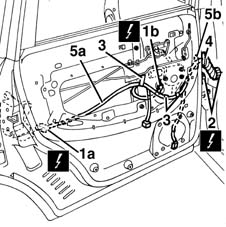

5505B20 rear door wiring - r r
- Path
- Procedures > 55 ELECTRICAL EQUIPMENT > 5505 INSTRUMENT/GUAGE ELECTRICAL WIRING > 5505B door,boot and bonnet wiring. > 5505B20 rear door wiring - r r
- Kind
- repair procedure (removal / refitting; the operation number is the code)
- Applies to
- all engines; all production periods
- Interactive page
- https://sloeber94.github.io/elrnDB-fMltpl/en/#/2891873
Applies to: all engines; all production periods
 Removing
Removing
 Refitting
Refitting7010E30 oddment pouch on one rear side door-r r
5570T96 rear side speaker - r r
1. Disconnect the electrical connections from the door lock (1a) and from the electric window motor (1b).
 | Name | Connector |
|---|---|---|
1a | Left rear door lock geared motor |
| Name | Connector |
|---|---|---|
1a | Right rear door lock geared motor |
| Name | Connector |
|---|---|---|
1b | Rear left electric window motor |
| Name | Connector |
|---|---|---|
1b | Rear right electric window motor |
2. Disconnect the door wiring electrical connection.
| Name | Connector |
|---|---|---|
2 | Rear left door connection |
| Name | Connector |
|---|---|---|
2 | Rear right door connection |
3. Disconnect the retaining springs for the cable loom from the door.
4. Remove the rubber protection from the door frame.
5. Extract the cable loom (5a) from the door frame, via the opening (5b).

Applies to: all engines; all production periods
Refitting
RemovingCheck that the wiring is undamaged and that the individual conductors are firmly attached to the connections.
Check that the connections are fitted with the antislip devices (secondary lock).
If necessary, check the continuity.
Insert the cable loom in its housing inside the door housing.
Fit the rubber protection on the door frame.
Attach the retaining springs for the cable loom to the door frame.
Connect the electrical connections.
Check the operation of the electrical components connected.
5570T96 rear side speaker - r r
Topics linked from this page (9)
- 5570T96 rear side speaker - r r
- 7010D22 rear side door descending window glass guide (one) - r r with door panel (and support frame) removed
- 7010E30 oddment pouch on one rear side door-r r
- D35 Rear left door connection
- D36 Rear right door connection
- N055 Left rear door lock geared motor ( REAR LEFT DOOR )
- N56 Right rear door lock geared motor
- N65 Rear left electric window motor
- N66 Rear right electric window motor